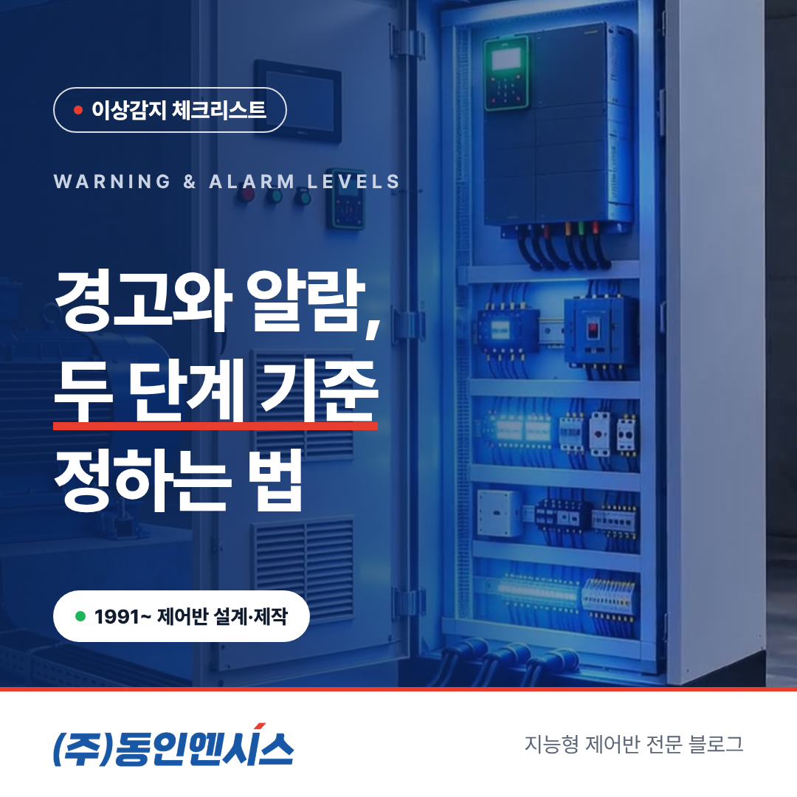
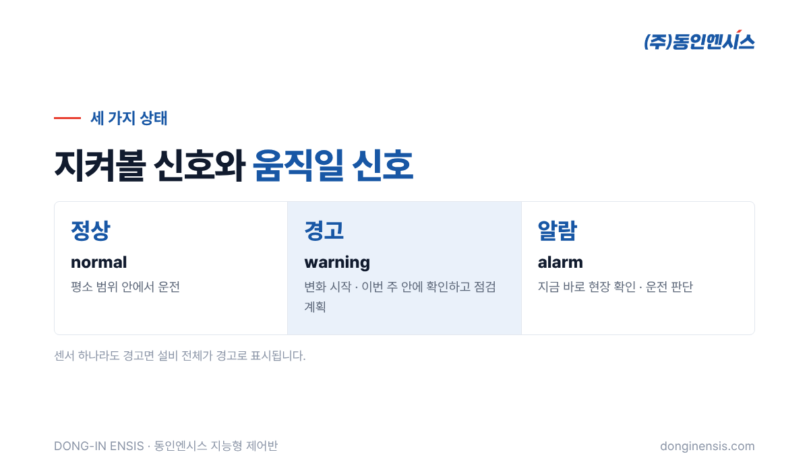
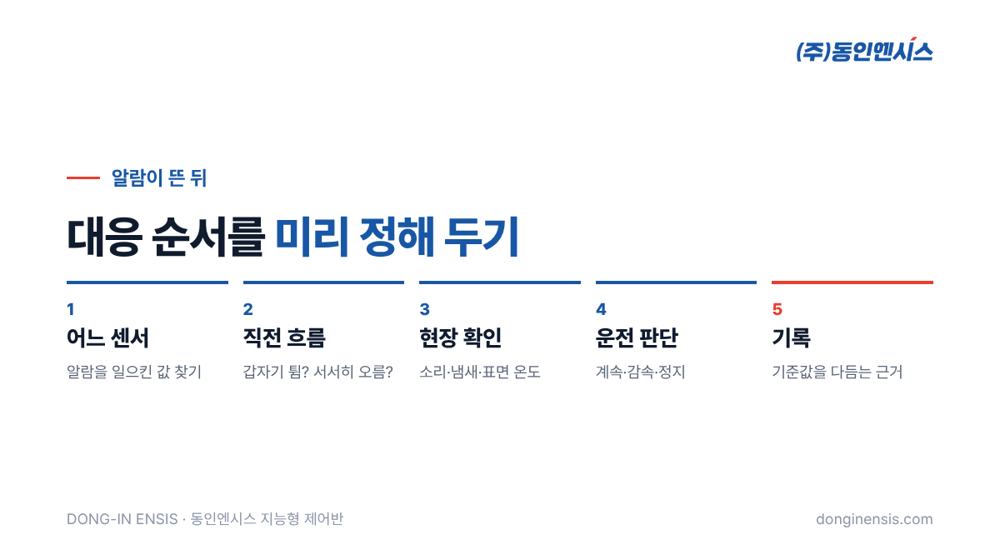

설비 감시 화면에 빨간불이 하나 뜨면 사람들은 바로 달려갑니다. 그런데 하루에도 몇 번씩 빨간불이 뜬다면 어떨까요. 처음 며칠은 달려가겠지만, 곧 아무도 쳐다보지 않게 됩니다. 반대로 빨간불이 뜰 때는 이미 설비가 멈춘 뒤라면, 그 알림은 기록 이상의 의미가 없습니다. 부산 진구에 본사를 두고 30년 넘게 제어반을 설계하고 제작해 온 동인엔시스가, 자사 지능형 제어반에 경고와 알람이라는 두 단계를 두는 이유와 설비 알람 기준을 정하는 방법을 비교로 풀어 보겠습니다.
알림 기준을 하나만 두면 늘 같은 고민에 부딪힙니다. 기준을 낮게 잡으면 사소한 변화에도 알림이 울려 담당자가 지치고, 높게 잡으면 조용하긴 한데 정작 손쓸 시간이 남지 않습니다.
| 한 단계 기준 | 낮게 잡으면 | 높게 잡으면 |
|---|---|---|
| 알림 횟수 | 너무 잦음 | 드묾 |
| 담당자 반응 | 점점 무시하게 됨 | 울리면 이미 늦은 경우가 많음 |
| 결과 | 진짜 이상도 묻힘 | 사후 대응이 됨 |
어느 쪽이든 알림이 제 역할을 못 합니다. 그래서 동인엔시스 지능형 제어반은 상태를 정상(normal), 경고(warning), 알람(alarm)의 세 가지로 나누어 판정합니다.
두 단계를 나누는 핵심은 '얼마나 급한가'와 '무엇을 해야 하는가'입니다.

| 구분 | 경고 (warning) | 알람 (alarm) |
|---|---|---|
| 뜻 | 평소와 다른 변화가 시작됨 | 바로 조치가 필요한 상태 |
| 급한 정도 | 오늘이나 이번 주 안에 확인 | 지금 바로 |
| 담당자가 할 일 | 추세를 보고 점검 계획 잡기 | 현장 확인, 필요하면 운전 조정·정지 판단 |
| 놓쳤을 때 | 알람으로 넘어갈 수 있음 | 설비 손상·정지로 이어질 수 있음 |
경고는 '지켜보라'는 신호이고, 알람은 '움직이라'는 신호입니다. 신호등의 노란불과 빨간불을 떠올리면 쉽습니다. 경고 단계에서 계획을 세워 손을 쓰면 알람까지 가지 않는 경우가 많습니다. 두 단계를 두는 진짜 목적이 여기에 있습니다. 갑작스러운 정지 대신 예고된 정비를 늘리는 것입니다. 급하지 않은 변화를 미리 보여 주어, 정비를 한가한 시간으로 옮길 수 있게 하는 것입니다.
펌프 한 대만 해도 감시하는 값이 열 가지 가까이 됩니다. 세 상의 권선온도와 베어링 온도, 진동과 회전속도, 전기 쪽 값들, 그리고 주변 온습도와 운전 상태까지 한 설비에서 함께 들어옵니다. 그렇다면 설비의 상태는 어떻게 정할까요.
원칙은 간단합니다. 센서마다 기준값으로 정상·경고·알람을 판정하고, 센서 가운데 하나라도 경고면 그 설비 전체를 경고로 표시합니다. 알람도 같은 방식입니다. 여러 값의 평균을 내지 않고 가장 나쁜 값을 따르는 셈입니다. 한 줄로 줄이면 '가장 약한 고리가 설비의 상태'라는 뜻입니다.
이렇게 하는 이유는 평균이 이상을 숨기기 때문입니다. 온도 일곱 개가 모두 정상이고 베어링 온도 하나만 오르고 있다면, 평균으로는 아무 일도 없어 보입니다. 하지만 설비 입장에서는 그 베어링 하나가 가장 중요한 소식입니다. 화면에서 설비 하나가 노란색으로 바뀌면, 들어가서 어느 센서 때문인지 확인하는 순서로 보면 됩니다.
설비마다 평소 모습이 다릅니다. 같은 펌프라도 설치 장소, 부하, 운전 방식에 따라 온도와 진동이 다르게 나옵니다. 그래서 기준값은 책에 나온 숫자를 그대로 쓰기보다, 시운전과 안정화 기간 동안 그 설비가 실제로 어떻게 움직이는지를 보고 정합니다. 모터와 베어링 제조사의 허용 범위는 넘지 않는 선에서, 그 설비의 평소 값과 얼마나 떨어지면 경고로 볼지를 함께 정하는 방식입니다.
처음 정한 기준이 끝까지 맞는 경우는 드뭅니다. 여름과 겨울, 생산량이 많은 달과 적은 달에 설비 값은 달라집니다. 경고가 너무 자주 뜬다면 기준을 조금 늦추고, 경고 없이 알람이 바로 뜬 적이 있다면 경고 기준을 당겨야 합니다. 동인엔시스는 유지관리 과정에서 이런 조정을 함께 진행합니다.
Photorealistic photo of a Korean maintenance worker in a grey work jacket in a factory pump room holding a tablet that shows a grid of abstract green tiles with one yellow tile (no readable text), a light-grey control cabinet and blue pump in soft focus behind, documentary style, natural light, no brand logos, no readable text. 3:2 landscape.
같은 제어반을 써도 운영 방식에 따라 결과가 달라집니다.
| 구분 | 잘 쓰는 현장 | 아쉬운 현장 |
|---|---|---|
| 경고가 뜨면 | 추세를 보고 점검 일정을 잡음 | 알람이 아니니 넘어감 |
| 알람이 뜨면 | 정해 둔 사람이 정해 둔 순서로 대응 | 누가 갈지 그때 정함 |
| 기준값 | 계절·공정 변화에 맞춰 조정 | 처음 값 그대로 |
| 기록 | 경고·알람 이력을 정비 계획에 반영 | 지나간 알림은 보지 않음 |
결국 기준값만큼 중요한 것은 '누가 무엇을 할지' 미리 정해 두는 일입니다. 경고는 담당자가 하루 한 번 확인하고, 알람은 바로 연락이 가도록 나누어 두면 알림이 일이 아니라 도구가 됩니다.

Photorealistic close-up photo of a Korean technician's gloved hands holding a handheld vibration meter probe against the bearing housing of an industrial electric motor, motor nameplate area out of focus with no readable text, factory floor background blurred, warm light, no brand logos, no readable text. 3:2 landscape.
알람은 끝이 아니라 시작입니다. 알람 뒤의 대응을 미리 정해 두면, 같은 상황이 와도 훨씬 덜 허둥댑니다.
특히 5번이 중요합니다. 알람마다 원인과 조치가 쌓이면, 어느 기준이 너무 빡빡했고 어느 기준이 늦었는지가 보입니다. 설비 알람 기준은 이렇게 운영 기록으로 다듬어집니다.
Q. 설비 알람 기준을 우리가 직접 바꿀 수 있나요? 기준값은 시운전과 안정화 때 함께 정하고, 이후 유지관리에서 현장 상황에 맞춰 조정합니다. 조정 방식과 권한은 프로젝트마다 협의합니다.
Q. 경고가 떴는데 아무 이상이 없으면요? 기준이 너무 빡빡하거나, 계절·공정 변화로 평소 값이 바뀐 경우일 수 있습니다. 그런 경고가 반복되면 기준값을 다시 맞추는 신호로 봅니다.
Q. AI가 알아서 기준을 정해 주나요? 지금 바로 쓰는 것은 센서별 기준값에 따른 경고·알람입니다. 평소 패턴을 학습해 미세한 이상을 찾는 AI 이상탐지는 실증을 거쳐 고도화하고 있습니다.
알림은 많을수록 좋은 것이 아니라, 지켜볼 것과 움직일 것을 구분해 줄 때 쓸모가 있습니다. 경고로 미리 보고, 알람으로 확실히 움직이고, 기준값은 현장과 함께 계속 다듬는 것. 동인엔시스가 지능형 제어반에 두 단계를 둔 이유입니다.
전화 051-862-3668 / 이메일 dongin@donginmne.com
아래 질문 중 하나에 실제 경험으로 답해 본문 적당한 곳에 넣어 주세요. 사람이 직접 쓴 문장이 들어가면 네이버에서 저품질 위험이 줄고 노출에 도움이 됩니다.